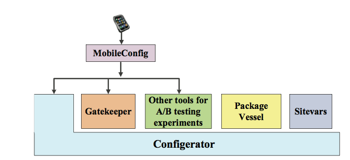

Facebook：每天数千次配置更新，如何实现用户零干扰
主要作者 | Facebook Chunqiang Tang
译者 | 阿里巴巴高级技术专家坤宇
校对 | Facebook Chunqiang Tang
导读
论文原标题：《Holistic Configuration Management at Facebook》，译者是阿里巴巴高级技术专家坤宇。Facebook 配置管理系统以及论文的主要作者Chunqiang Tang 对译文逐字逐句做了精心的校对，感谢Chunqiang的校对，尤其感谢他们在中心化配置管理这个领域做出的的卓越探索。
☞ 出于阅读体验的考虑，本文对译文中的“使用统计和经验”的章节以及一些代码内容进行了删减，公众号后台回复“Facebook”，可以获取论文英文原文和译文全文（PDF版本）
在过去的近10年里，Facebook和阿里巴巴可以说是在生产上运营了世界上 TOP 2 的中心化配置管理系统。他们在生产的配置中心里都存储数百万的各种类型的应用配置，每天因配置变更带来的配置推送服务更是超1亿次，两家在中心化、动态配置管理这个领域的前沿探索都做出了卓越的贡献，其在生产上的成功实践可以说是给大型互联网公司如何做配置的中心化管理带来了很大的启发和示范效应。
虽然在系统架构方案上迥异，但两家大型互联网公司在包括在动态配置服务的主要应用场景，对于互联网应用配置管理的中心化管理需求的响应，动态配置管理及推送模式，大配置文件的P2P分发（阿里内部用的是名为“燎原”的子系统）等方向上的探索都暗自大同小异。
同时，目前2家公司也正在计划在开源社区做更多的合作和努力，正在计划通过联合业界包括Google，Spring Cloud，configapp 等进一步在开源社区建立 OpenConfiguration 中心化动态配置管理规范上做更多有益的努力和探索。而这个过程中，阿里巴巴建立新的开源项目Nacos - 传送门和阿里云SaaS服务 ACM 也是这些努力中的一小个部分。
论文摘要
Facebook的网站和手机应用都日新月异。每天，它们都要经历至少数千次在线配置更新，并执行数万亿次实时配置检查，以给数亿个日常活跃用户个性化的新产品体验。例如，用配置更新来控制产品新功能的推出; 在手机上进行新功能比较测试，以确定网络电话的最佳参数; 重新平衡全球各地区服务器的负载;或者，部署新的机器学习模型来改进个人新闻流的排序。本文全面描述了Facebook的一揽子配置管理方案，涵盖了前端产品，后端系统，和手机应用。内容包括了Facebook配置系统的用例，设计，实现，和使用统计信息。
1
引言
在工业界，软件开发和部署的周期急剧加快了[13]。一个主要推动力是来自互联网服务。不同于传统软件的较长更新周期，在互联网服务中，频繁的软件升级不仅成为可能，而且也是在瞬息万变的竞争中赖以生存的必要条件。以Facebook为例。我们每天两次将我们的网站facebook.com更新到最新代码[29]。我们网站的各种配置更新甚至更加频繁，每天达数千次之多。 以2014年为例，数千名工程师对网站进行了实时配置更新，这甚至超过了更改Facebook前端产品代码的工程师总量。
“配置管理”有着多重含义。像业界众多公司一样，Facebook使用开源的Chef[7]来管理操作系统的设置和软件部署[11]，但这完全不是本文的重点。相反，本文仅专注于讲解我们自己内部开发的管理软件，来进行应用程序的实时动态配置。更新这些动态配置帮助我们完成产品新功能的推出，做用户比较测试来判定新功能是否真的比旧功能更好用，或者在全球范围动态管理网站流量。我们每天进行数几千次配置更新，但完全无需重启应用程序，达到对用户零打扰，以此来保证高品质的用户体验。
网站宕机或出错的一个最主要原因是大量工程师进行频繁的实时配置更新，以及由此而来的不可避免的人为操作失误[24]。在这样的环境下，预防配置错误的发生已经是一个非常大的挑战了，但这还仅仅是我们面对的众多挑战之一。下面，我们概述互联网服务在配置管理中面临的主要挑战和我们的解决方案。
各自为政的配置管理
Facebook拥有大量的内部子系统，包括前端产品，后端服务，手机应用，数据存储等。它们各自对配置管理有不同的需求。以往，每个内部子系统往往各自为政，开发它们自己独特的配置存储和分发机制，导致很难对整个网站进行整齐划一的综合管理。为了抑制互不兼容的配置系统在公司的泛滥，我们开发并推出一套综合配置系统，对公司所有的内部子系统进行整合和统一支持。目前，我们的配置系统从单一界面就可以管理公司所有子系统的数十万个配置，并将其实时分发到至少数十万个服务器和数十亿个手机上。
配置的编写和版本控制
大规模的分布式系统通常有许多可以实时调整的配置参数。Facebook的配置文件有的大，有的小，复杂度也不一样。就大小而言，Facebook配置一般是1KB，大的可以达到MB甚至GB。即便是1KB的配置文件都已经很复杂了。手动编辑这些配置文件是很容易出错的。即使是一个小小的错误也可能导致整个网站的停摆。我们的解决方案是“用代码来产生配置”（configuration-as-code）。工程师们只用写高级源代码来描述配置。我们的编译器会自动从源代码生成最后使用的配置文件。这就好像现在的工程师只需要写C++代码，早已没人会去手工写容易出错而且难以理解的服务器二进制代码一样。我们将这些配置程序和编译产生的配置文件都存储在版本控制工具中。
防范配置错误
我们用多种综合办法来防范配置错误。首先，配置编译器自动运行验证代码来确保配置的不变性没有被违反。一个很简单的例子是内存大小的配置不能是负数。其次，我们把配置变更同代码变更同样严肃地对待，必须通过严格的代码审查流程。第三，影响前端产品的配置更新自动地被拿去做集成测试(integration test)。最后，自动化的金丝雀测试(canary test)分阶段地把配置更新推送到在线服务器上，监控系统运行状况是否稳定，并在发现问题后立刻自动退回到以前旧的配置，以确保网站的安全稳定运行。在这个解决方案中，我们必须克服的一个主要难点是如何可靠地监控并高精确度地判定各种五花八门的后端系统是否因为配置更新而宕机或遇到问题。
配置的相关性和依赖性
Facebook.com 内部其实包括大量不同的子系统来完成不同的功能。这些子系统由不同的团队开发。每个子系统都有自己的配置，但不同子系统的配置之间有依赖关系。例如，当我们的监控系统开发了新的功能，并通过配置更新来大面积启用新的监控功能后，所有其它子系统的监控配置都可能需要进行相应的更新。我们的解决方案是用表达源代码文件相关依赖性一样的方法，来表达配置的相关依赖性，类似于C程序中的include语句。这样，当一个配置文件被更新以后，所有相关的配置文件都会被自动重新编译，就像C程序一样。但是，一个不同点是，我们的编译器会自动从配置代码中发现配置文件的依赖关系，而无需工程师去手动编辑makefile，从而使得配置依赖性的管理更简单和不易犯错。
可扩展和可靠的配置分发
我们的配置系统所管理的网站比以前的类似系统要大很多[30]，并且支持更多样化的应用程序，包括移动应用程序。一个配置文件的大小可以小到几个字节或者大到几个GB。在这样大的规模下，并且由于服务器分布在全球，有时候服务器或者网络出错是不可避免的常态。在这样的环境下，将配置文件及时和可靠地推送到所有服务器和上亿移动设备上是一个重大挑战。我们绝不能让配置管理系统的不可靠性负面影响到应用程序，成为应用程序可用性的瓶颈。
本文系统地描述了我们对以上这些挑战的解决方案。我们做出了如下贡献：
实时动态的配置管理是互联网服务的一个重要课题，但在过去的文献中没有全面的解释和定义。根据我们自己的实战经验和总结，本文详解了这个课题涵盖的内容并提供了真实的案例，希望能够推动更多人从事这一重要领域的研究。 我们描述了Facebook关于配置管理的全面解决方案，包括以前文献从未涉及的诸多挑战，例如管控产品新功能的发布，配置的编写，自动化金丝雀测试 (canary test)，手机应用的配置管理，以及一种混合的P2P方式来分发超大的配置文件(GB)。我们相信本文是第一个详解了对互联网服务进行全面配置管理的创新性研究。
我们报告了Facebook运行大规模配置管理系统的统计数据和实战经验。这些都是第一次在公开文献中被披露。例如，一些有趣的问题是: “已经用了很久的旧配置还会有人去更改它们吗，还是完全没人再碰了？” “配置更新会暴露现有代码的bug吗？这样的情况经常发生吗？” 如果您想知道这些问题的答案，请详细阅读以下章节。☟
2
配置管理用例和解决方案概述
我们专注于互联网服务的动态实时配置管理。这些配置文件可能会每天经历多次实时更新，但完全无需重启应用程序，以避免对用户体验的影响。“配置管理”一词涵盖面太广，可能会导致读者的不同理解。下面，我们讲几个实际用例来加深读者对“配置管理”的理解。请注意，这些例子只是我们今天管理的成千上万个配置文件中极小的一部分示例而已，切勿以偏概全。
管控新产品功能的发布
当我们开发Facebook的新产品功能时，我们倾向于尽早向用户发布这些新功能，以便及时获得用户意见和反馈，然后频繁地进行软件更新来改进产品新功能。即便一个产品的新功能仍处于开发期，我们通常已经把新代码大规模推送到了在线服务器或手机上，但处于禁用状态。然后，我们使用一个叫Gatekeeper的配置管理工具将产品的新功能逐步在线启用。如果出现问题，Gatekeeper可以快速禁用新代码，从而避免负面的用户体验。Gatekeeper能够精确控制哪些用户将首先体验新功能。我们并不是把一个新功能对上亿用户同时启用。我们通常从小规模试用开始。例如，最初只有Facebook内部员工能使用一个新功能。如果员工反馈良好，那么1％的外部用户可以使用新功能，然后逐步增长到5%用户，50%用户，等等。这些都可以很容易地通过配置管理工具来控制。
进行对比实验
一个产品的良好设计通常需要做比较测试（A/B Test）来收集数据，然后用大数据来帮助改良产品。例如，由于硬件变化，Facebook Messenger上网络电话的回声消除参数需要针对不同的移动设备进行调整。我们的配置管理工具可以对在线系统或手机进行实时实验，通过配置更新来测试不同的参数，并获得用户反馈。
网站的流量控制
有些配置文件是用来管理网站的流量。我们有自动化工具定期地进行配置更新，通过跨区域流量转移来实现服务器的负载平衡，并对在线系统进行大规模负载测试。在紧急情况下，通过某个配置可以完全转移走一整个服务器集群上的流量，而通过一个配置可以临时禁用那些需要很多服务器资源的产品功能，从而保证整个网站的稳定。在影子测试 (shadow test)期间，配置更新可以启动或停止将实时流量复制到测试服务器。在防火练习期间，配置更新可以有意将局部故障引入在线系统中，来测试系统是否在局部故障的情况下仍然整体稳定。
拓扑设置和负载均衡
Facebook将用户数据存储在一个名为TAO的大型分布式数据系统中[5]。随着硬件设置的改变（例如，新的服务器上线），或者用户流量发生变化，或者发生局部故障，我们可以通过配置更新来驱动TAO的拓扑改变并重新平衡负载。
系统监控，警报和修复
通过配置更新，Facebook的在线监控系统可以动态地决定：1）收集哪些监控数据，2）监控仪表板的图表布局，3）警报检测规则（即什么样的情况被认为是系统异常），4）警报订阅规则（即人应该通过手机或者email收到实时警报），以及5）系统自动修复规则 [27]，例如重新启动服务器或重新安装服务器的操作系统。所有这些都可以在不进行代码升级的情况下进行动态更改，例如，在诊断故障的时候，通过配置更新来收集更多的监控数据。
更新机器学习模型
机器学习模型可以用于指导搜索排名，个人新闻流排名，和网络攻击。这些模型经常用最新数据进行重新训练并更新。在无需代码升级的情况下，我们可以通过配置更新把新的机器学习模型分发到服务器上。这写模型被广泛应用与不同产品中。其数据大小可以从KB到GB不等。
控制应用程序的内部行为
这是最常见的用例之一。大规模在线系统往往有许多参数来控制其行为。例如，一个数据存储系统预留多少内存来做缓存，在写入磁盘之前批量写入多少数据，在读取时预取多少数据等等。

图释：Facebook的配置管理工具。 MobileConfig支持手机应用。所有其他工具都支持在数据中心运行的应用程序。
图1中显示了Facebook的配置管理工具，他们一起工作来支持各种不同用例。
➤ Configerator
提供了所有的基础功能，包括版本控制，配置创作，代码审查，自动化金丝雀测试和配置分发。其他工具建立在Configerator之上并提供专门的功能。
➤ Gatekeeper
控制新产品功能的推出。此外，它还可以运行比较测试（A/B test）实验来查找最佳配置参数。除Gatekeeper之外，Facebook还有其它一些A/B测试工具。由于本文篇幅的限制，我们在此略过不表。
➤ PackageVessel
在不牺牲一致性保证的前提下，使用P2P文件传输来帮助分发大型的配置文件,例如机器学习模型可以大到GBs。
Sitevars专为前端PHP产品提供易于使用的配置API。
➤ MobileConfig
在Android和iOS上管理移动应用程序的配置，并将它们和后端系统对接，包括Configerator和Gatekeeper。 MobileConfig不需要和Sitevars对接，因为Sitevars仅适用于PHP。MobileConfig没有和PackageVessel对接，因为目前不需要将非常大的配置文件传输到移动设备上。
我们在下面的章节中逐个描述以上这些配置工具。☟
3
配置管理工具详解
Configerator的功能包括但不局限于以下几点：配置创作，配置错误预防和大规模配置分发方面。
3.1 配置创作
我们的假设是：
1）大多数工程师更喜欢编写代码来生成配置（即配置文件）而不是手动编辑配置，2）大多数配置程序比原始配置文件本身更容易维护。
我们将在6.1节使用数据来验证这些假设。
根据这些假设，Configerator 采用的解决方案是“用代码来产生配置” （configuration as code）。
图2显示了一个例子。

图2：Configerator编译器从Python和Thrift源代码生成一个JSON配置文件。
我们用独立于特定平台的Thrift [2]语言来定义配置的数据模式（请参阅“job.thrift”）。工程师写两个Python文件“create_job.cinc”和“cache_job.cconf”来操纵Thrift对象。
在程序的最后执行“export_if_last()”自动将配置写入JSON [20]文件。为了防止无效配置，工程师编写另一个Python文件“job.thrift-cvalidator”来描述配置的不变量。验证器由Configerator编译器自动调用，来验证每个“Job”类型的配置。
配置源程序和编译产生的JSON配置文件都存储在版本控制工具中，例如git [14]。在图3的左上角，在“开发服务器”中,工程师使用git的本地克隆(local clone)。工程师编辑源代码并调用Configerator编译器来生成JSON配置文件。在图3的顶部，配置更新也可以由工程师通过Web UI发起，或者自动化工具通过调用 “Mutator”提供的API来发起。

图3：Configerator的体系结构
它使用git进行版本控制，Zeus用于树形结构的配置分发，Phabricator用于代码审查，Sandcastle用于系统集成测试，Canary Service用于自动在线系统测试，Landing Strip用于最后提交变更，Mutator用于提供API支持自动化工具，Dependency Service自动跟踪配置文件之间的依赖关系。Production Server(在线服务器)上的应用程序通过与Proxy(代理)进行交互以访问它需要的配置文件。
图示将job.cinc从job.cconf中分离出来，以便前者可以作为通用模块重用，以便为其他类型的作业创建配置。假设三个不同的团队参与编写配置代码：调度程序团队，缓存团队和安全团队。调度程序团队实现调度程序软件并提供共享配置代码，包括配置数据类型job.thrift，可重用模块create_jobinc和验证程序job.thrift-cvalidator，它确保其他团队提供的配置不会意外地破会调度安排。缓存组通过简单地调用create_job（name=“cache”）来生成缓存作业的配置，而安全团队通过简单地调用create_job（name =“security”）来生成安全作业的配置。
代码模块化和重用是维护配置代码比手动编辑JSON配置文件更容易的一个关键原因。配置文件之间的依赖关系通过import_thrift()和import_python()来表达。
3.2 通过UI和Sitevars提高可用性
作为一个统一的平台，Configerator支持各种不同的用例。它必须拥有足够的灵活性和丰富的表达性才能支持复杂的配置。另一方面，简单的配置可能不会从上图中Python和Thrift代码的复杂性中受益。Configerator UI允许工程师直接编辑Thrift配置对象的值，而无需编写任何代码。UI自动生成Configerator内部所需的文件。
Sitevars是Configerator之上的一层包装，用于支持前端PHP产品使用的简单配置。它提供可配置的name-value对。该值是一个PHP表达式。工程师使用Sitevars UI轻松更新sitevar的PHP内容，无需编写任何Python/Thrift代码。 Sitevar可以在PHP中实现一个检查器来验证不变量，类似于上图中的验证器。由于PHP是弱类型语言，因此sitevars更容易出现配置错误，例如错别字。我们鼓励工程师为新创建的sitevar定义数据类型。已有的sitevar可能没有定义数据类型。我们的工具自动从其历史值中自动推断其数据类型。例如，它推断一个sitevar的字段是否是一个字符串。如果是这样，它进一步推断它是JSON字符串，时间戳字符串还是一般字符串。如果一个sitevar的更新值和以前推断出的数据类型不符，UI会向工程师显示一条警告消息。
3.3 防止配置错误
配置错误是网站宕机的主要原因[24]。我们采取全面的方法来防止配置错误，包括1）配置验证器以确保不会违反配置的不变量（比如，内存大小配置不能是负数），2）对配置程序和生成的JSON配置进行人工代码审查，3）手动配置测试，4）自动化集成测试 (integration test)，以及 5）自动化金丝雀测试(canary test)。这些不同的办法互为补充防范不同的配置错误。下面，我们按照图3的流程来解释它们。
为了手动测试新配置，工程师会运行命令将新配置临时部署到某些在线服务器或测试服务器，并验证所有内容是否正常工作。一旦满意，工程师将源代码，JSON配置和测试结果提交给一个名为Phabricator的代码审查系统 [26]。如果配置与facebook.com的前端产品相关， “Sandcastle”工具会自动在新配置下对网站进行综合集成测试。 Sandcastle将测试结果张贴到Phabricator供代码审阅者访问。一旦代码审阅者批准，工程师将配置更新推送到远程的“金丝雀服务（Canary Service）”。
金丝雀服务在有实时流量的在线服务器的一个子集上自动测试新配置。它补充了手动测试和自动化集成测试。手动测试可以执行难以自动化的测试，但可能由于疏忽或时间压力下的快捷测试而错过一些配置错误。集成测试可以有广泛的覆盖范围，但是由于其较小的测试规模或其他环境差异，也可能会错过一些配置错误。
每个配置文件都可以有一个与之对应的测试规范，来描述如何在在线系统中自动测试新的配置文件。一个测试规范可以定义多个测试阶段。例如，在阶段1中，在20个服务器上进行小规模测试; 在第二阶段，用数以千计的服务器对整个集群进行测试。对于每个阶段，它指定用于测试的服务器，健康检查指标，以及决定测试通过与否的条件。一个测试通过条件的例子是，“使用新配置从服务器收集到的点击率（CTR）不应该比仍旧使用旧配置的服务器收集的点击率低x％。”
金丝雀服务与运行在被测服务器上的“代理”进行对话，以暂时部署新的配置（参见图3的底部）。如果新配置通过了所有的测试阶段，那么金丝雀服务会要求Landing Strip将更改提交到git中。
3.4 可扩展及可靠的配置分发
Configerator将配置更新分发到全球至少数十万台服务器。在这样的环境下，服务器和网络故障是常态。除了可扩展性和可靠性之外，其他对Configerator重要的属性还包括：1）可用性（即应用程序应该继续运行，即便管配置管理工具本身遭遇故障）;和 2）数据一致性（即，运行在不同服务器上的应用程序最终应该能够以相同顺序接收所有配置更新，尽管不能保证它们都在同一时刻收到配置更新）。在本节中，我们将介绍Configerator如何通过推送模式实现这些目标。
在图3中， “Git Tailer”不断从git中提取配置更新，并将它们写入Zeus进行分发。 Zeus是ZooKeeper在Facebook内部的改进版本[18]，具有许多可扩展性和性能增强，以便在Facebook规模下工作。它在分布在多个地区的服务器之间运行协商一致的协议，以提供适应性，如果领导者（leader）失败了，一个追随者（follower）就会变成一个新的领导者,从而保证连续可靠运行。
Zeus使用三层高扇出(high-fanout)分发树，领导→观察者→代理，通过推送模式分发配置。leader在树上有数百名观察员（Observer）作为孩子。高扇出(high-fanout)树是可行的，因为数据中心网络具有高带宽并且仅通过树发送小数据。大数据通过点对点（peer-to-peer）协议分开分发（参见第3.5节）。三级树管理简单，足以满足当前规模。根据需要将来可以添加更多级别。
每个Facebook数据中心都由多个集群组成。每个集群都由数千台服务器组成，并且有多台服务器被指定为Zeus观察员。每个观察者都保留领导者数据的完全复制的只读副本。在接收到写入之后，领导者会对追随者进行写入，然后将写入异步地推送给每个观察者。如果观察者失败，然后重新连接到领导者，它会发送它所知道的最新事务ID，并请求丢失的数据。ZooKeeper共识协议的提交日志有助于保证配置更新的按顺序交付。
每个服务器运行一个Configerator“代理”进程，随机选择同一个集群中的一个观察者来连接。如果观察者失败，则代理连接到另一个观察者。与观察者不同，代理不保留领导者数据的完整副本。它只提取和缓存服务器上运行的应用程序所需的配置。
应用程序链接一个Configerator客户端库以访问其配置。启动时，应用程序请求代理获取其配置文件。代理使用从观察者读取配置，并告知观察者在稍后有配置更新时通知代理。代理将配置存储在磁盘缓存中供以后重用。如果代理失败，应用程序将直接从磁盘缓存读取数据。这种设计提供了高可用性。只要配置存在于磁盘缓存中，即使所有Configerator组件都出错了（包括git，Zeus领导者/追随者，观察者和代理），应用程序也可以访问配置（尽管配置可能过时了outdated）。
Configerator使用数据推送模式。它如何与数据拉收模型[19,30]相比？拉收模式的最大优点是它的实现简单，因为服务器端可以是无状态的，不需要存储关于单个客户端的任何硬性状态，例如每个客户端需要什么配置（注意不同的服务器可以运行不同的应用程序和因此需要不同的配置）。但是，两个原因导致拉收模型的效率较低下。首先，大多数轮询（polls）都没有新的数据返回，因此是纯粹的额外开销。很难确定最佳的轮询频率。其次，由于服务器端是无状态的，因此客户端必须在每个轮询中包含客户端所需的完整配置列表，这随配置数量的增长而不可扩展。在我们的环境中，许多服务器需要数以万计的配置才能运行。在我们的环境中，我们选择推送模式。
3.5 通过PackageVessel分发大型配置
一些配置可能大到GB，例如，帮助个人新闻流排序的机器学习模型。由于这些大型配置可能会频繁更新，因此通过Zeus分发树来分发它们是不能扩展的，因为它会使树的内部节点过载。而且，如果配置分发路径在大型配置和小型（但是关键）配置之间重叠，则很难保证服务质量。
我们的PackageVessel工具通过将大型配置的元数据与其块内容(bulk content)分离来解决问题。当大型配置发生变化时，其块内容将上传到一个额外的存储系统。然后它会更新存储在Configerator中的配置的小型元数据，包括新配置的版本号和获取配置的块内容的位置。 Configerator保证将元数据可靠地交付给订阅配置的服务器。收到元数据更新后，服务器使用BitTorrent [8]协议从存储系统中获取配置的块内容。需要相同大型配置的服务器以点对点（P2P）方式互相交换配置的块内容，以避免集中存储系统过载。我们的P2P协议具有本地感知（注:本地优先）功能，因此服务器更愿意与处在同一群集中的服务器交换数据。我们建议对于配置大于1MB的配置使用PackageVessel。
简单地应用P2P模式本身不能保证数据的一致性。我们的混合订阅-P2P模型没有这个限制。Zeus的订阅模式保证了元数据的一致性，从而推动了批量内容的一致性。例如，Facebook的垃圾内容检测系统每天多次更新和分发数百MB的配置数据到全球数千台服务器。我们的统计数据显示，PackageVessel能够在不到四分钟的时间内始终如一地将大型配置分发到全球服务器。
3.6 提高配置更新的吞吐量
当多个工程师同时把配置提交到共享的git存储库时，会导致冲突并降低提交过程的速度。我们通过的下面例子来解释。当工程师尝试将配置更新X推送到共享的git存储库时，git将检查存储库的本地克隆(local clone)是否是最新的。如果不是，她必须先将本地克隆版本更新到最新版本，这可能需要10秒钟的时间才能完成。更新完成后，她会尝试再次将更新X推送到git存储库，但另一名工程师的另一个更新Y可能刚刚被有效提交了。即使更新 X和更新Y更改了不同的文件，git也认为工程师的本地存储库克隆已过时，并再次需要更新。
[图3] 中的“Landing Strip”通过以下的工作序列来提高吞吐量： 1）接收提交者的更新，2）根据先来先服务的顺序(first-come-first-served)对它们进行序列化，以及 3）代表提交者将它们推送到共享的git存储库，而不需要提交者使其本地存储库克隆保持最新状态。如果在被推送的更新和以前提交的更新之间存在真正的冲突，则共享的git存储库将拒绝更新，并将错误传递回提交者。只有这时候，提交者才需要更新她的本地存储库克隆并解决冲突。
landing strip减轻了提交争用问题，但并未从根本上解决提交吞吐量问题，因为1）共享git存储库一次只能接受一个提交，并且2）随着存储库变大，git操作变得更慢。 Configerator从一个共享的git仓库开始。为了提高提交吞吐量，我们正在迁移到多个较小的git存储库，这些git存储库共同为分区的全局名称空间提供服务。
3.7 容错
图3中的每个组件都具有跨多个区域的内置冗余。一个地区是主（master）。每个备份区域都有自己的git仓库副本，并从主区域接收更新。区域中的git存储库存储在NFS上，并安装在多台服务器上，其中一台作为主服务器。每个区域运行所有服务的多个实例，包括 mutator，canary service，landing strip和dependency service。 Configerator支持区域内和跨区域的故障切换(failover)。
3.8 Summary
Configerator解决了配置创作，配置错误预防和配置分发方面的关键挑战。它采用配置作为代码（configuration-as-code）的方式编译并从高级源代码生成配置。它将配置依赖性表示为源代码依赖性，并鼓励配置代码模块化和重用。它采用一个全面的方法来防止配置错误，包括配置验证器，代码审查，手动配置测试，自动化集成测试和自动化金丝雀测试。它采用推送模式通过分发树来传送小配置文件，并使用P2P协议传递大配置的块内容。它通过将提交委托给landing strip来避免提交冲突。它通过使用多个共同提供分区全局名称空间的git存储库来提高提交吞吐量。
4
Gatekeeper
Facebook尽早和频繁地发布软件。它迫使我们获得早期反馈并快速改进产品。它使故障排除更容易，因为两个版本之间的代码增量很小。它最大限度地减少了导致维护复杂化的代码分支的使用。另一方面，频繁的软件发布会增加软件漏洞破坏网站的风险。本节介绍Gatekeeper如何通过在线配置更新管理代码推出（rollouts）来帮助降低风险。
即便新产品功能仍在开发中，Facebook工程师通常会尽早将新代码发布到在线系统中，但处于禁用状态，然后使用Gatekeeper逐步启用在线功能。如果在推出（rollout）期间检测到任何问题，则可以立即禁用新代码。在不更改任何源代码的情况下，使用Gatekeeper来启用一个新产品功能一般需要经历多个阶段。例如，最初Gatekeeper只能将产品功能启用给开发该功能的工程师。然后，Gatekeeper可以让一部分Facebook内部员工启用新功能，并慢慢将比例提高，例如1％→10％→100％。在内部测试成功后，它可以针对来自特定区域的5％的用户。最后，该功能可以在全球范围内以不断扩大的覆盖范围启动给用户，例如1％→10％→100％。
Gatekeeper项目是通过配置动态组成的。限制（restraint）的内部实现是用PHP代码。目前，已经实施了数百种限制，用来组成数万个Gatekeeper项目。限制检查用户的各种条件，例如国家/地区，地区，移动应用程序，设备，新用户和朋友的数量。
Gatekeeper项目的控制逻辑在Configerator中以JSON配置存储。当配置发生变化时（例如，将用户使用新功能的比列从1％提高到10％），新配置将被传送到在线服务器（请参见图3的底部）。Gatekeeper运行时读取配置并构建一个布尔树来表示门控逻辑。与SQL引擎如何执行基于成本的优化类似，Gatekeeper运行时可以利用执行统计信息（例如约束的执行时间和返回true的概率）来指导布尔树的高效评估。
除了使用rand()对一个用户子集进行采样之外，图5中的示例与析取范式（DNF）类似。抽样是功能门控所固有的，即将特征推广到日益增多的人口，例如1％→10％。否定运算符是在每个约束内部构建的。例如，员工约束可以配置为检查“不是员工”。因此，门控逻辑具有DNF的全部表现力。
Gatekeeper使用DNF的限制和用户采样来形成门控逻辑。它在灵活性，可用性和安全性之间达到一个平衡。理论上，是有可能通过允许工程师以动态编程语言（例如，PHP）编写任意门控代码，并且立即分发门控逻辑（即，不限于图5中的形式）并作为一个实时配置更新执行。这种方法提供了最大的灵活性，但增加了配置错误的风险。而且，对比不用编写任何代码就可以简单地从Gatekeeper的UI中选择限制，对于大多数工程师来说使用起来比较困难。最后，它对Gatekeeper的额外的灵活性是有限的，因为Facebook每天推出两次PHP代码，并且可以快速添加新的限制。
一些门控逻辑在计算上花费太高而无法在约束内实时的执行。例如 ，一个产品特征应该只暴露给最近的帖子与当前热门话题相关的用户。这个计算需要连续的流处理。在另一个例子中，它需要运行一个MapReduce作业来分析历史数据，以识别适合产品功能的用户。Gatekeeper提供了一个键值存储接口(key-value-store interface)来与这些外部系统集成。一个特殊的“laser()”限制在一个名为Laser的键值存储系统中调用get（“$ project-$user id”）。如果返回值大于可配置的阈值，例如get(...)>T，则限制通过。任何系统都可以通过将数据放入Laser中与Gatekeeper集成。Laser将数据存储在闪存或内存中以便快速访问。它具有自动数据管道，用于从流处理系统或MapReduce作业的输出中加载数据。可以定期重新运行MapReduce作业来刷新所有用户的数据。
5
MobileConfig
由于移动环境中的独特挑战，手机应用的配置管理与数据中心中运行的应用程序的配置管理不同。首先，移动网络有严重的受限制因素，比如网络带宽和数据流量。其次，手机平台多样化，至少有Android和iOS支持。最后，不像数据中心中的应用，我们不能控制用户对手机应用的更新，以至于有些手机用户会用很老的手机应用版本，在向后兼容性方面提出了挑战。

图6：MobileConfig 架构图
MobileConfig 解决了这些挑战，同时最大限度地提高了为在数据中心中运行的应用程序开发的配置管理工具的重用性。图6显示了MobileConfig的体系结构。每个配置都以移动应用的本地语言显示为一个上下文类（Context Class）。该应用程序调用上下文类的getter方法来检索配置字段的值。支持上下文类的客户端库在C++中实现，因此可以在Android和iOS上移植。
在移动环境中，由于推送通知不完全可靠，因此MobileConfig不能完全依赖推送模式进行配置分发。客户端库对服务器进行配置更新（例如，每小时一次）并将配置缓存在闪存上供以后重用。为了最小化带宽消耗，客户端向服务器发送配置数据类型的哈希值（用于模式版本控制）以及缓存在客户端上的配置值的哈希值。服务器只发送已更改且与客户端的模式版本。除了拉取(pull)之外，服务器偶尔还会通过推送通知将紧急配置更新推送到客户端，例如立即禁用一个有故障的产品功能。推和拉的组合使解决方案简单可靠。
为了应对支持移动应用的老旧版本，MobileConfig的一个设计原则是将接口与实现分离。图6中的翻译层提供了一个间接级别来将MobileConfig字段灵活地映射到后端配置。映射可以改变。从长远来看，所有的后端系统（例如Gatekeeper和Configerator）都可能被新的系统所取代。只需要改变翻译层的映射就能顺利完成迁移。为了扩展到十亿以上的移动设备，翻译层在许多服务器上运行。翻译映射存储在Configerator中并分发到所有的翻译服务器。
6
MobileConfig
我们详解了Facebook的配置管理系统。我们的主要贡献是1）定义配置管理这个问题给出用例，2）描述整体解决方案，3）报告来自Facebook使用统计数据和实战经验（这里提到的第3点由于篇幅较长，可从英文和译文原文中获取）。我们今后的主要工作包括扩展Configerator，增强自动化金丝雀，扩展MobileConfig以涵盖更多应用程序，改进配置抽象（例如，引入配置继承）以及基于历史数据标记高风险配置更新。
本文描述的技术并非专为大型互联网服务设计。这对于中小型系统也很重要。有趣的是，Sitevars的第一个简单版本是十多年前推出的，当时Facebook还很小。 那么，在我们的经验和知识中，哪些是对Facebook以外的其它公司也有价值的呢？我们总结了以下的想法。但是，反过来，我们也提醒读者小心也许我们的某些结论有过度泛化的潜在风险。
敏捷的配置管理使敏捷软件开发（agile software development）成为可能。例如，通过配置更新来小心控制新产品推出的过程可有效降低频繁发布软件带来的风险。比较测试（A/B test）工具允许工程师快速地对产品特征进行原型设计，并快速放弃一些不成功的产品新功能。即使我们使用的特定技术并不完全适用您的公司，也许，您还是可以考虑其它的重大配置管理改进来大幅提升贵公司的件开发流程。
通过适当的工具支持，即使是很大的公司也可以实施“开放式”配置管理，即几乎每个工程师（成千上万个工程师）都可以自主进行在线配置更新。虽然看起来有风险，可能不适合每个公司，但我们的经验证明，这确实可行！它对敏捷软件开发很有益。
一定要有一个全面的方法来预防配置错误，包括配置编写，验证，代码审查，手动测试，自动化集成测试和自动化金丝雀测试。
虽然配置管理的用例可能非常多样化（例如，控制新产品推出到比较测试，从服务器到手机应用），但是在一个统一和灵活的基础框架之上支持所有这些功能是完全可行和有益的（见图1）。否则，劣质车轮将被重新发明。在Facebook，这是一个从各自为政的很多配置解决方案逐渐融合到单一Configerator系统的历史。
除了那些极端简单的配置以外，工程师编写程序来生成配置，而不是手动编辑配置，这样工作效率更高，而且错误更少。
在数据中心中，通过树来分发配置更新会提高推送模型的效率。
混合推拉式模式更适合移动应用程序，因为单独的推送通知是不可靠的。
将大型配置的小型元数据的分发与大块内容的分发（通过P2P协议）分离开来，使得解决方案具有可扩展性，而不会牺牲数据一致性保证。
典型的git设置不能为大规模配置管理提供足够的提交吞吐量。解决方法是使用多个git存储库共同提供分区的全局名称空间，并委托提交到landing strip以避免争用。
我们报告的配置用例和使用统计数据可能会激励未来的研究。例如，我们的数据显示旧配置确实得到更新，许多配置更新多次。自动标记基于过去历史记录的高风险更新会很有帮助，例如，休眠配置突然以不同寻常的方式改变。
鸣谢
我们要感谢匿名审稿人和咱们帮助我们修改论文的指导Shan Lu。作者们是Facebook配置管理团队的当前或最近成员。在过去，许多其他同事对Configerator，Gatekeeper，Sitevars和Zeus做出来贡献。感谢我们的夏季实习生Peng Huang在实验中的贡献。
参考文献
[1] ADYA, A., COOPER, G., MYERS, D., AND PIATEK, M. Thialfi: a client notification service for internet-scale applications. In Proceedings of the 23rd ACM Symposium on Operating Systems Principles (2011), pp. 129–142. SOSP’11.
[2] APACHE THRIFT. http://thrift.apache.org/.
[3] ATTARIYAN, M., AND FLINN, J. Automating configuration troubleshooting with dynamic information flow analysis. In Proceedings of 9th USENIX Symposium on Operating Systems Design and Implementation (2010), pp. 237–250. OSDI’10.
[4] AWS ELASTIC BEANSTALK. http://aws.amazon.com/elasticbeanstalk/.
[5] BRONSON, N., AMSDEN, Z., CABRERA, G., CHAKKA, P., DIMOV, P., DING, H., FERRIS, J., GIARDULLO, A., KULKARNI, S., LI, H., ET AL. TAO: Facebook’s distributed data store for the social graph. In Proceedings of the 2013 USENIX Annual Technical Conference (2013). USENIX ATC’13.
[6] BURROWS, M. The Chubby lock service for loosely-coupled distributed systems. In Proceedings of 7th USENIX Symposium on Operating Systems Design and Implementation (2006), pp. 335–350. OSDI’06.
[7] CHEF. http://www.opscode.com/chef/.
[8] COHEN, B. Incentives build robustness in bittorrent. In Proceedings of the 1st Workshop on Economics of Peer-to-Peer systems (2003), pp. 68–72.
[9] CONRADI, R., AND WESTFECHTEL, B. Version models for software configuration management. ACM Computing Surveys 30, 2 (1998), 232–282.
[10] DELAET, T., JOOSEN, W., AND VAN BRABANT, B. A survey of system configuration tools. In Proceedings of the 24th Large Installation System Administration Conference (2010). LISA’10.
[11] DIBOWITZ, P. Really large scale systems configuration: config management @ Facebook, 2013. https://www.socallinuxexpo.org/scale11x-supporting/default/ files/presentations/cfgmgmt.pdf.
[12] DUVALL, P. M., MATYAS, S., AND GLOVER, A. Continuous integration: improving software quality and reducing risk. Pearson Education, 2007.
[13] FOWLER, M., AND HIGHSMITH, J. The agile manifesto. Software Development 9, 8 (2001), 28–35.
[14] GIT. http://git-scm.com/.
[15] GOOGLE APP ENGINE. https://appengine.google.com/.
[16] HEROKU. https://www.heroku.com/.
[17] HUANG, P., BOLOSKY, W. J., SINGH, A., AND ZHOU, Y. ConfValley: A systematic configuration validation framework for cloud services. In Proceedings of the 10th European Conference on Computer Systems (2015), p. 19. EuroSys’15.
[18] HUNT, P., KONAR, M., JUNQUEIRA, F. P., AND REED, B. ZooKeeper: wait-free coordination for internet-scale systems. In Proceedings of the 2010 USENIX Annual Technical Conference (2010), pp. 11–11. USENIX ATC’10.
[19] ISARD, M. Autopilot: automatic data center management. ACM SIGOPS Operating Systems Review 41, 2 (2007), 60–67.
[20] JAVASCRIPT OBJECT NOTATION (JSON). http://www.json.org/.
[21] MAHAJAN, R., WETHERALL, D., AND ANDERSON, T. Understanding BGP misconfiguration. In Proceedings of the ACM SIGCOMM 2002 Conference on Applications, Technologies, Architectures, and Protocols for Computer Communication (2002), pp. 3–16. SIGCOMM’02.
[22] MOGUL, J. C., CHAN, Y.-M., AND KELLY, T. Design, implementation, and evaluation of duplicate transfer detection in HTTP. In Proceedings of the 1st Symposium on Networked Systems Design and Implementation (2004), pp. 43–56. NSDI’04.
[23] MUTHITACHAROEN, A., CHEN, B., AND MAZIERES, D. A low-bandwidth network file system. In Proceedings of the 18th ACM Symposium on Operating Systems principles (2001), pp. 174–187. SOSP’01.
[24] OPPENHEIMER, D., GANAPATHI, A., AND PATTERSON, D. A. Why do Internet services fail, and what can be done about it? In Proceedings of the 4th USENIX Symposium on Internet Technologies and Systems (2003). USITS’03.
[25] PAPPAS, V., XU, Z., LU, S., MASSEY, D., TERZIS, A., AND ZHANG, L. Impact of configuration errors on DNS robustness. In Proceedings of the ACM SIGCOMM 2004 Conference on Applications, Technologies, Architectures, and Protocols for Computer Communication (2004), pp. 319–330. SIGCOMM’04.
[26] PHABRICATOR. http://phabricator.org/.
[27] POWER, A., 2011. Making Facebook Self-Healing, https://www.facebook. com/notes/facebook-engineering/making-facebook-self-healing/ 10150275248698920.
[28] PUPPET. https://puppetlabs.com/.
[29] ROSSI, C. Ship early and ship twice as often. https://www.facebook.com/ notes/facebook-engineering/ship-early-and-ship-twice-as-often/ 10150985860363920.
[30] SHERMAN, A., LISIECKI, P. A., BERKHEIMER, A., AND WEIN, J. ACMS: the Akamai configuration management system. In Proceedings of the 2nd conference on Symposium on Networked Systems Design & Implementation (2005), pp. 245–258. NSDI’05.
[31] SU, Y.-Y., ATTARIYAN, M., AND FLINN, J. AutoBash: improving configuration management with operating system causality analysis. In Proceedings of the 21st ACM Symposium on Operating Systems Principles (2007), pp. 237–250. SOSP’07.
[32] WHITAKER, A., COX, R. S., AND GRIBBLE, S. D. Configuration debugging as search: Finding the needle in the haystack. In Proceedings of 6th USENIX Symposium on Operating Systems Design and Implementation (2004), pp. 77–90. OSDI’04.
[33] WOOL, A. A quantitative study of firewall configuration errors. IEEE Computer 37, 6 (2004), 62–67.
[34] XU, T., ZHANG, J., HUANG, P., ZHENG, J., SHENG, T., YUAN, D., ZHOU, Y., AND PASUPATHY, S. Do not blame users for misconfigurations. In Proceedings of the 24th ACM Symposium on Operating Systems Principles (2013), pp. 244–259. SOSP’13.
[35] XU, T., AND ZHOU, Y. Systems approaches to tackling configuration errors: A survey. ACM Computing Surveys 47, 4 (2015), 70.
[36] YIN, Z., MA, X., ZHENG, J., ZHOU, Y., BAIRAVASUNDARAM, L. N., AND PASUPATHY, S. An empirical study on configuration errors in commercial and open source systems. In Proceedings of the 23rd ACM Symposium on Operating Systems Principles (2011), pp. 159– 172. SOSP’11.
[37] ZHANG, J., RENGANARAYANA, L., ZHANG, X., GE, N., BALA, V., XU, T., AND ZHOU, Y. EnCore: Exploiting system environment and correlation information for misconfiguration detection. In Proceedings of the 19th Architectural Support for Programming Languages and Operating Systems (2014), pp. 687–700. ASPLOS’14.
今日推文
点击下方图片即可阅读
» 阿里巴巴开源 Nacos，为Dubbo生态发展铺路